这里试跑一篇弗吉尼亚大学和 Nokia 的生成式推荐论文：《SAPO: Step-Aligned Policy Optimization for Reasoning-Based Generative Recommendation》。这篇文章的核心问题很明确：当生成式推荐模型输出的是分层 Semantic ID，并且每一层 SID token 都有可验证对错时，RL 阶段如果仍然只用整条 rollout 的最终命中奖励，就会把 credit assignment 做得太粗，导致前面已经预测对的 SID 层也被一起惩罚。SAPO 的思路是把“一个 thinking block + 一个 SID token”看成一个 reasoning step，然后按 step 分配 reward 和 advantage。
论文链接：https://arxiv.org/abs/2605.17648
PDF 链接：https://arxiv.org/pdf/2605.17648
代码链接：https://github.com/zhengzaiyi/SAPO
1. 背景
生成式推荐现在常见的做法是先把 item 编码成 Semantic ID，也就是几层 codebook token，然后让语言模型根据用户历史生成下一个 item 的 SID。这个范式和 LLM 很贴近：输入是一段用户历史 prompt，输出是一段 token 序列；如果再加上 reasoning trace，模型就会先生成若干 thinking block，再生成最后的 SID token。
问题在于，推荐任务里的反馈通常是最终 item 是否命中。如果一个三层 SID 的前两层都对了，第三层错了，最终 item 仍然不命中；如果三层全错，最终也不命中。传统 outcome-reward GRPO 会把这两种情况都看成同样的失败，然后把同一个 rollout-level advantage 广播给整条 response。这样会有两个副作用：第一，正确的 SID 前缀得不到正反馈；第二，和错误 SID 层无关的 thinking block 也被同一个负信号更新。
作者在 Figure 1 里先展示了这种训练不稳定性：GRPO 的 reward 早期会上升，但后面容易平台化或震荡，同时 response length 和 KL to reference 都会漂移。
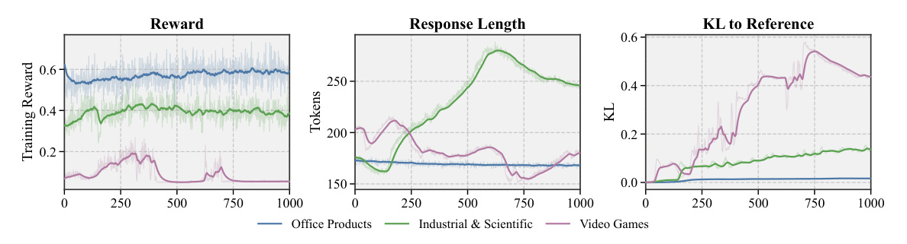
这里我觉得它抓住了生成式推荐一个很现实的问题：SID 是有层级结构的，但 RL 反馈却被压扁成了一个标量。只要目录规模足够大，exact-match reward 就会非常稀疏，模型很难知道到底是粗粒度兴趣错了，还是最后的细粒度 item token 错了。
2. SAPO 方法
SAPO 的整体流程分成三阶段：第一阶段让语言模型对齐推荐任务和 SID vocabulary；第二阶段激活 reasoning，让模型形成每一层 SID token 对应一个 thinking block 的输出格式；第三阶段才做 RL，但 RL 不再按整条 rollout 分配 credit，而是按 reasoning step 分配。

从图里可以看到，Stage 3 里一条 response 被拆成了 $K$ 个 step。每个 step 都包含一个 thinking block 和一个 SID token。假设 $K=3$，那就有三个局部可验证的位置：第一层 SID 是否命中，第二层 SID 是否命中，第三层 SID 是否命中。SAPO 的关键就是把这三个位置的反馈保留下来，而不是只看最终 tuple 是否完全匹配。
2.1 为什么 rollout-level reward 不够
如果只用最终 exact-match，近似正确和完全错误会被混在一起。比如真实 SID 是 $(s_1, s_2, s_3)$，模型预测 $(s_1, s_2, \tilde{s}_3)$，它其实已经抓住了前两层语义，只是最后细粒度 item 错了；但 outcome reward 仍然是 0。这样前两层的 reasoning 和 SID token 也被负 advantage 影响，训练信号就会变脏。
一种自然想法是把 reward shaping 成“每预测对一层加一分”。但作者指出，如果最终仍然把这个分数合成一个 rollout-level advantage 再广播给整段文本，问题没有根除。它只是告诉模型“这条 response 部分正确”，却没告诉模型“哪一个 step 正确、哪一个 step 错误”。
2.2 Step-Aligned Policy Optimization
SAPO 做了三件事：
- reasoning-step match reward：每一个 SID 层都有自己的 match reward，预测对就给局部奖励，最后一层还可以附加格式正确性 bonus。
- step-level group-relative advantage：不是每条 rollout 一个 advantage，而是每条 rollout 的每个 step 一个 advantage。
- step-normalized token aggregation：更新时只把这个 step 的 advantage 作用到对应 thinking block 和 SID token 上，避免跨 step 污染。
这相当于把 RL 的 action unit 从“整段回答”改成“一个可验证的推理步骤”。它没有引入额外 reward model，也不需要人工标注过程奖励，而是利用 SID 层级天然提供的可验证中间信号。
3. 实验结果
主实验在三个 Amazon Reviews 类别上做：Office-Products、Video-Games、Industrial-and-Scientific。基线包括传统序列推荐 GRU4Rec、SASRec、Caser，也包括 TIGER、HSTU、LCRec、LETTER 等非 reasoning 的生成式推荐，以及 R2ec、ReaRec、OneRec-Think、SIDReasoner 等 reasoning-based generative recommender。
主表说明 SAPO 不是在每一个 Recall 列都绝对第一，但在 NDCG 上表现更稳定，尤其能改善排序位置质量。对我来说，这比单纯 Recall 更重要，因为 SID 生成模型最终还是要服务 top-k 排序。
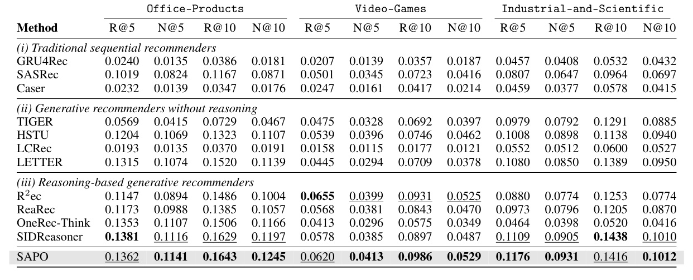
训练动态更能说明问题。Figure 3 对比了 SAPO 和 GRPO 在 Industrial-and-Scientific 数据集上的 reward、response length、stepwise response length、KL 和 SID match rate。SAPO 的曲线更稳，GRPO 的 response length 和 KL 更容易漂移。
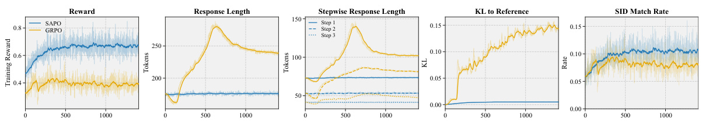
消融实验把 SAPO 拆成几个组件看：去掉 per-step advantage、去掉 per-step match reward、两者都去掉。结果显示两个组件是互补的，单独保留一个会比纯 GRPO 好，但完整 SAPO 最稳。
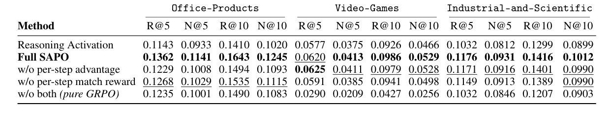
Figure 4 进一步看 reward 和 gradient norm。纯 GRPO 的梯度范数会明显上升，说明 rollout-level credit assignment 会带来更不稳定的更新；SAPO 和单组件变体都更稳定。
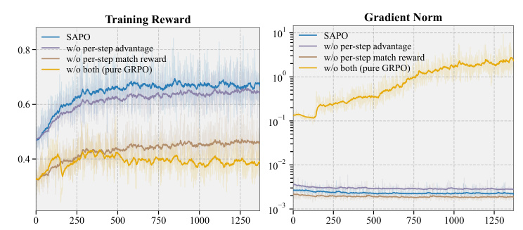
案例分析也很直观：同一个 3D 打印相关的用户历史，Outcome GRPO 能捕捉到泛化的“3D printing hardware”兴趣，但最后推荐到了错误的配件；SAPO 的分步推理能把线索细化到 filament、extrusion、NEMA17 coupling、stepper motor 这条更具体的链路，最后 SID 命中。
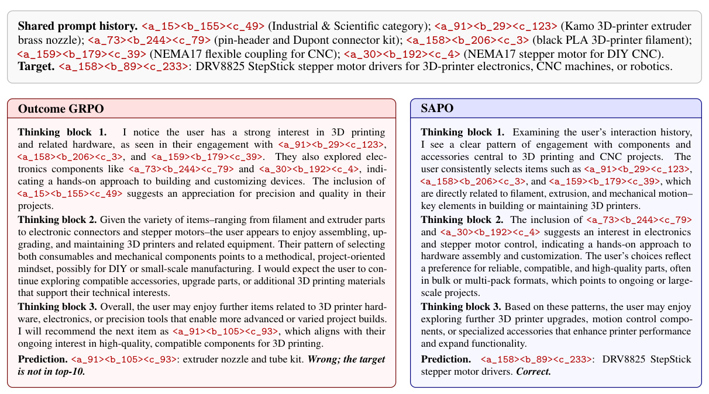
4. 附录图表与复现信息
论文附录里给了符号表、数据集统计、codebook 使用率、prompt 模板和训练超参。这些图表对复现比较有用，所以这里也按顺序截出来。注意这里的图片和表格截图都没有包含 caption；每一个图或表都是单独裁剪，不把同页里的多个对象合在一起。
符号表可以帮助快速对齐论文记号，尤其是 $y_i$、$\tau_i^{(k)}$、$r_{i,k}$、$\hat{A}_{i,k}$ 这些变量。
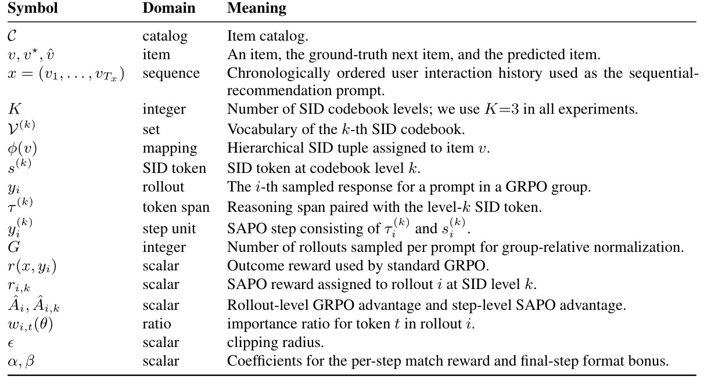
数据集统计显示三个类别规模都不算特别大，item 数在 3000-4000 左右，平均测试序列长度约 6。这意味着它验证的是中等规模序列推荐场景，不等于已经证明能直接覆盖亿级工业目录。
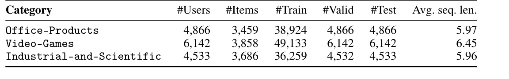
codebook utilization 表里比较有意思的是 Level 1 利用率明显低于 Level 2/3。作者借这个现象说明 SID 每一层的预测难度并不对称，所以单一标量 advantage 很难同时适配每个层级。
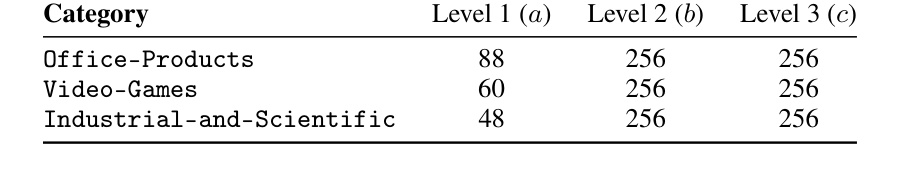
Stage 3 的 prompt 模板强调了输出格式：先是若干 <think>...</think>，然后输出 SID level 1、2、3。这种格式让每个 thinking block 和每个 SID token 可以自然配对。
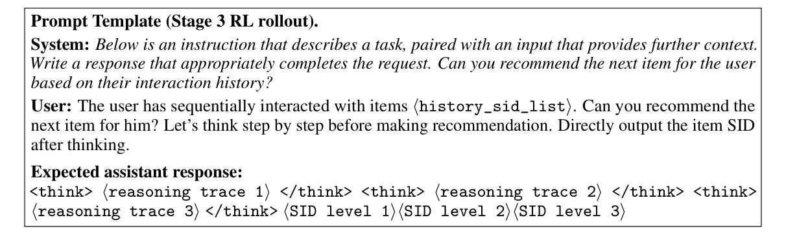
具体 prompt example 展示了 Office-Products 里的一个 full-match case。这里用户历史全是 SID tuple，item 文本字段只用于离线 tokenization 和人工检查，不直接喂给 LLM。
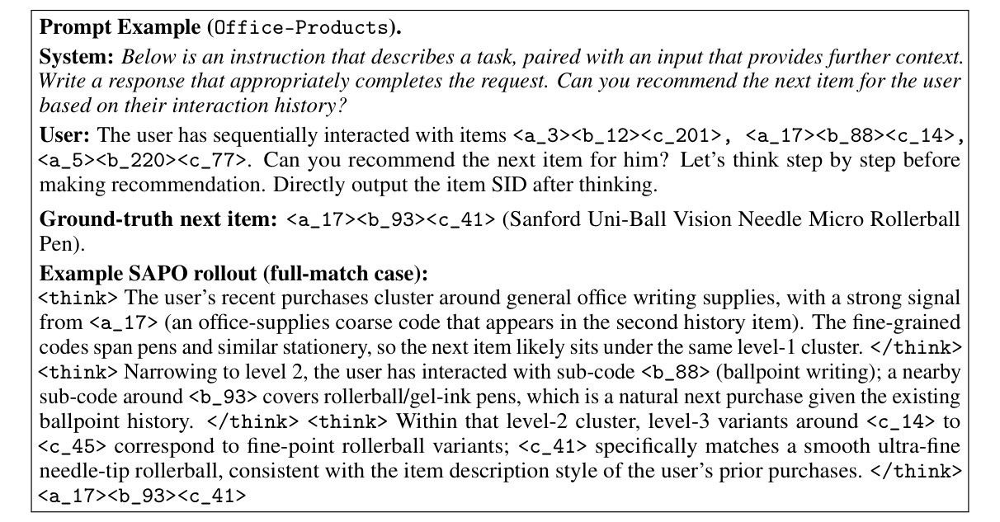
训练超参表显示，Stage 1/2/3 的 learning rate 逐步降低，Stage 3 使用 Qwen3-1.7B、vLLM rollout、每个 prompt 采样 16 个 rollouts，最大输出长度是 1024+1024。这个成本不低，说明 reasoning-based generative recommendation 的训练链路比普通序列推荐重很多。
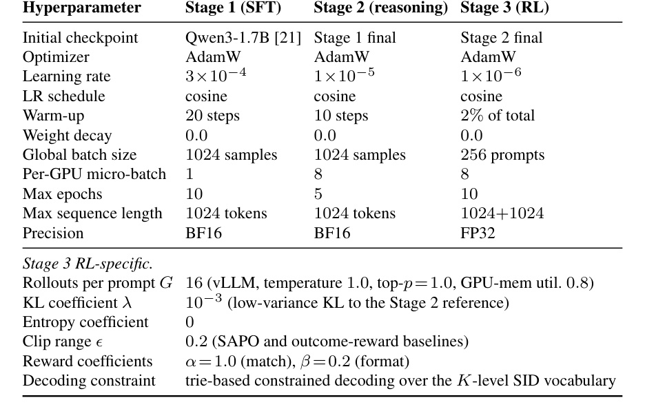
训练效率表比较关键：SAPO 的 per-step reward/advantage 计算会让 reward+advantage 时间从 0.59s 增到 1.13s，但 wall-clock per step 基本不变。作者的解释是训练主要瓶颈在 rollout generation 和 actor update，而不是 reward 计算本身。
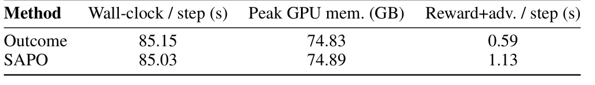
Video-Games 和 Office-Products 的扩展训练动态也支持同一个结论：SAPO 的 reward 和 SID match rate 更稳，GRPO 更容易出现 reward collapse、response length drift 或 KL growth。
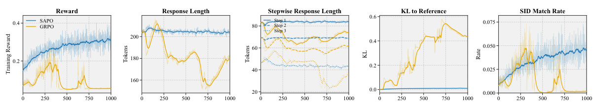
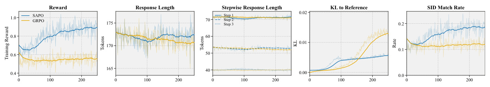
5. 我的理解
我觉得 SAPO 的价值不在于“又提出一个 RL 算法名字”，而是在提醒生成式推荐的 RL 优化必须尊重输出结构。很多推荐任务本来就是结构化的：类目、品牌、价格带、item、排序位置、多目标 slate，每个层级都有部分可验证信号。如果把这些信号都压成最终点击或最终 item hit，再用一个标量 advantage 广播到所有 token，训练效率和稳定性都会受影响。
它和过程奖励也有点像，但又比人工过程奖励更轻。因为 SID 层级本来就是可验证的，不需要额外训练 reward model；只要模型输出格式能稳定解析，就可以得到 step-level 反馈。这对工业推荐很有吸引力。
但我也会保留几个疑问：
- 论文用的是 $K=3$ 的 RQ-VAE SID，真实业务里 SID 层级可能更深，而且目录动态更新会导致 SID 重分配。SAPO 对动态 SID 是否稳，还需要验证。
- reasoning trace 会增加推理成本。即便训练稳定，线上是否真的能接受“先推理再生成 SID”的链路，还要看召回层/粗排层的延迟预算。
- Amazon 数据集和真实工业推荐差距仍然很大。尤其广告、短视频、电商主站的 reward 不只是 item hit，还包括点击、转化、时长、满意度和长期留存。
- 如果模型为了获得 step-level reward 学会输出格式化但无意义的 thinking block，仍可能出现新的 reward hacking，需要监控 thinking block 的长度、重复度和可解释性。
6. 总结
SAPO 可以概括为一句话：把生成式推荐里 SID 的层级结构，变成 RL credit assignment 的层级结构。 它把“整条回答一个 reward”拆成“每个 reasoning step 一个 reward/advantage”，从而保留局部正确信号，减少错误 step 对其他 step 的污染。
如果后续要把 LLM reasoning 真正用于推荐系统，我觉得这类方法是必须关注的。因为推荐输出不像闲聊文本，它天然有结构、有约束、有局部可验证信号。用好这些结构，比单纯套 GRPO/PPO 更可能带来稳定收益。